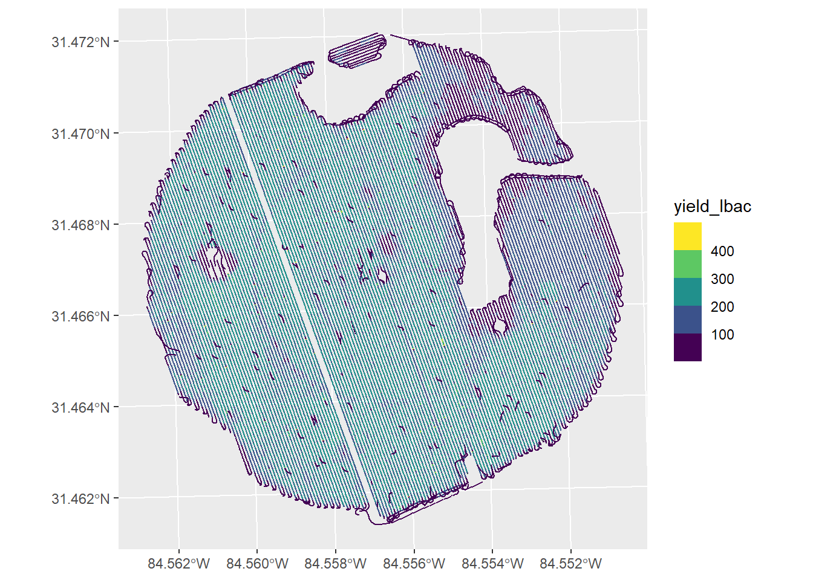

library(readr)
library(janitor)
library(dplyr)
library(tidyr)
library(ggplot2)
library(sf)
library(viridis)
library(mapview)Yield Stability
#setup ##Loading Packages
##Importing Data
yield16 <- read_csv("../Data/Deer Run1 2016 Yield.csv")Rows: 73574 Columns: 35
── Column specification ────────────────────────────────────────────────────────
Delimiter: ","
chr (15): Time, WindDire, SkyCondi, SoilMois, Record01, LoadName, LoadDest, ...
dbl (19): Long, Lat, Heading, Distance, Elevatio, Width, Relative, AirTempe,...
lgl (1): DelStatus
ℹ Use `spec()` to retrieve the full column specification for this data.
ℹ Specify the column types or set `show_col_types = FALSE` to quiet this message.yield16# A tibble: 73,574 × 35
Long Lat Heading Distance Elevatio Time Width DelStatus Relative AirTempe
<dbl> <dbl> <dbl> <dbl> <dbl> <chr> <dbl> <lgl> <dbl> <dbl>
1 -84.6 31.5 166. 0.357 206. 8/6/… 24 FALSE 0 0
2 -84.6 31.5 346. 4.03 206. 8/6/… 24 FALSE 0 0
3 -84.6 31.5 346. 1.96 206. 8/6/… 24 FALSE 0 0
4 -84.6 31.5 345. 2.13 206. 8/6/… 24 FALSE 0 0
5 -84.6 31.5 164. 6.16 206. 8/6/… 24 FALSE 0 0
6 -84.6 31.5 162. 3.44 206. 8/6/… 24 FALSE 0 0
7 -84.6 31.5 162. 3.44 206. 8/6/… 24 FALSE 0 0
8 -84.6 31.5 162. 3.51 206. 8/6/… 24 FALSE 0 0
9 -84.6 31.5 162. 3.54 206. 8/6/… 24 FALSE 0 0
10 -84.6 31.5 163. 3.64 206. 8/6/… 24 FALSE 0 0
# ℹ 73,564 more rows
# ℹ 25 more variables: WindSpee <dbl>, SoilTemp <dbl>, WindDire <chr>,
# SkyCondi <chr>, SoilMois <chr>, FuelRate <dbl>, Product0 <dbl>,
# Record01 <chr>, HarvestM <dbl>, YieldMas <dbl>, YieldWet <dbl>,
# DryYield <dbl>, LoadNumber <dbl>, LoadName <chr>, LoadDest <chr>,
# Operator <chr>, Machine <chr>, Implement1 <chr>, Client <chr>, Farm <chr>,
# Field <chr>, Task <chr>, OperType <chr>, ProcYear <dbl>, speed_mph <dbl>#EDA
summary(yield16) Long Lat Heading Distance
Min. :-84.56 Min. :31.46 Min. : 0.0284 Min. : 0.0328
1st Qu.:-84.56 1st Qu.:31.46 1st Qu.:161.4647 1st Qu.: 5.8312
Median :-84.56 Median :31.47 Median :169.1726 Median : 6.7170
Mean :-84.56 Mean :31.47 Mean :243.0027 Mean : 6.0399
3rd Qu.:-84.55 3rd Qu.:31.47 3rd Qu.:341.4965 3rd Qu.: 7.1108
Max. :-84.55 Max. :31.47 Max. :359.9531 Max. :13.6965
Elevatio Time Width DelStatus Relative
Min. :194.6 Length:73574 Min. : 0.00 Mode :logical Min. :0
1st Qu.:202.3 Class :character 1st Qu.:24.00 FALSE:73574 1st Qu.:0
Median :204.7 Mode :character Median :24.00 Median :0
Mean :205.3 Mean :21.31 Mean :0
3rd Qu.:207.8 3rd Qu.:24.00 3rd Qu.:0
Max. :220.9 Max. :24.00 Max. :0
AirTempe WindSpee SoilTemp WindDire SkyCondi
Min. :0 Min. :0 Min. :0 Length:73574 Length:73574
1st Qu.:0 1st Qu.:0 1st Qu.:0 Class :character Class :character
Median :0 Median :0 Median :0 Mode :character Mode :character
Mean :0 Mean :0 Mean :0
3rd Qu.:0 3rd Qu.:0 3rd Qu.:0
Max. :0 Max. :0 Max. :0
SoilMois FuelRate Product0 Record01
Length:73574 Min. : 0.00 Min. :1690 Length:73574
Class :character 1st Qu.:11.99 1st Qu.:1690 Class :character
Mode :character Median :14.94 Median :1690 Mode :character
Mean :13.78 Mean :1690
3rd Qu.:16.33 3rd Qu.:1690
Max. :18.65 Max. :1690
HarvestM YieldMas YieldWet DryYield LoadNumber
Min. : 0.00 Min. : 0.00 Min. : 0.00 Min. : 0.0 Min. :0
1st Qu.:15.51 1st Qu.:17.68 1st Qu.:17.90 1st Qu.: 107.5 1st Qu.:0
Median :16.40 Median :39.50 Median :40.23 Median : 192.6 Median :0
Mean :14.59 Mean :32.01 Mean :32.63 Mean : 161.3 Mean :0
3rd Qu.:17.11 3rd Qu.:45.38 3rd Qu.:46.34 3rd Qu.: 220.2 3rd Qu.:0
Max. :25.30 Max. :72.52 Max. :73.70 Max. :1785.8 Max. :0
LoadName LoadDest Operator Machine
Length:73574 Length:73574 Length:73574 Length:73574
Class :character Class :character Class :character Class :character
Mode :character Mode :character Mode :character Mode :character
Implement1 Client Farm Field
Length:73574 Length:73574 Length:73574 Length:73574
Class :character Class :character Class :character Class :character
Mode :character Mode :character Mode :character Mode :character
Task OperType ProcYear speed_mph
Length:73574 Length:73574 Min. :2016 Min. :0.00
Class :character Class :character 1st Qu.:2016 1st Qu.:3.98
Mode :character Mode :character Median :2016 Median :4.58
Mean :2016 Mean : Inf
3rd Qu.:2016 3rd Qu.:4.85
Max. :2016 Max. : Inf ggplot(yield16,
aes(x = DryYield)) +
geom_density(fill= "skyblue", alpha =0.5) +
geom_rug()
ggplot(yield16,
aes(x= speed_mph)) +
geom_density(fill = "lightpink", alpha = 0.5)+
geom_rug()Warning: Removed 165 rows containing non-finite outside the scale range
(`stat_density()`).
ggplot(yield16,
aes(x = Long,
y = Lat)) +
geom_point(aes(color = DryYield)) +
scale_color_viridis_b() +
theme_bw()
ggplot(yield16,
aes(x = speed_mph,
y = DryYield)) +
geom_point() +
geom_smooth()`geom_smooth()` using method = 'gam' and formula = 'y ~ s(x, bs = "cs")'Warning: Removed 165 rows containing non-finite outside the scale range
(`stat_smooth()`).
#Data Wrangling
yield16_w <- yield16 %>%
clean_names() %>%
dplyr::select(long, lat,
speed_mph,
yield_lbac = dry_yield) %>%
mutate(yield_kgha = yield_lbac * 0.453592/0.404686,
speed_kmh = speed_mph * 1.060934) %>%
#filter(yield_lbac != 0) %>%
st_as_sf(coords = c("long", "lat")) %>%
st_set_crs(value = 4326) %>%
st_transform(crs = 6345)
yield16_wSimple feature collection with 73574 features and 4 fields
Geometry type: POINT
Dimension: XY
Bounding box: xmin: 731562.6 ymin: 3483311 xmax: 732729.7 ymax: 3484504
Projected CRS: NAD83(2011) / UTM zone 16N
# A tibble: 73,574 × 5
speed_mph yield_lbac yield_kgha speed_kmh geometry
* <dbl> <dbl> <dbl> <dbl> <POINT [m]>
1 0.24 362. 406. 0.255 (731757.5 3484346)
2 2.75 73.7 82.6 2.92 (731757.3 3484347)
3 1.34 210. 236. 1.42 (731757.4 3484346)
4 1.45 187. 210. 1.54 (731757.6 3484346)
5 4.2 73.1 81.9 4.46 (731758.2 3484344)
6 2.35 135. 151. 2.49 (731758.6 3484343)
7 2.35 163. 183. 2.49 (731759 3484342)
8 2.39 146. 164. 2.54 (731759.3 3484341)
9 2.41 149. 167. 2.56 (731759.7 3484340)
10 2.48 152. 170. 2.63 (731760 3484339)
# ℹ 73,564 more rows#Maps
yield16_w %>%
filter(yield_lbac <500) %>%
ggplot() +
geom_sf(aes(color = yield_lbac),
size = .1) +
scale_color_viridis_b()
#EDA
summary(yield16_w) speed_mph yield_lbac yield_kgha speed_kmh
Min. :0.00 Min. : 0.0 Min. : 0.0 Min. :0.000
1st Qu.:3.98 1st Qu.: 107.5 1st Qu.: 120.5 1st Qu.:4.223
Median :4.58 Median : 192.6 Median : 215.9 Median :4.859
Mean : Inf Mean : 161.3 Mean : 180.8 Mean : Inf
3rd Qu.:4.85 3rd Qu.: 220.2 3rd Qu.: 246.9 3rd Qu.:5.146
Max. : Inf Max. :1785.8 Max. :2001.6 Max. : Inf
geometry
POINT :73574
epsg:6345 : 0
+proj=utm ...: 0
Raw yield quantiles
lowq_yield <- quantile(yield16_w$yield_lbac, 0.1)
lowq_yield10%
0 upq_yield <- quantile(yield16_w$yield_lbac, 0.99)
upq_yield 99%
289.7228 iqr <- upq_yield - lowq_yield
iqr 99%
289.7228 miny <- lowq_yield - (iqr * 0.25)
miny 10%
-72.43071 maxy <- upq_yield + (iqr * 0.25)
maxy 99%
362.1536 Min/Max raw yield quantile plot
ggplot() +
geom_density(data = yield16_w,
aes(x = yield_lbac)) +
geom_vline(xintercept = upq_yield,
color = "blue",
linetype = 2
)+
geom_vline(xintercept = lowq_yield,
color = "red",
linetype = 2
)+
geom_vline(xintercept = miny,
color = "red",
linetype = 1
) +
geom_vline(xintercept = maxy,
color = "blue",
linetype = 1
)+
annotate(geom = "rect",
ymin =0,
ymax = Inf,
xmin = miny,
xmax = maxy,
alpha = .6,
fill = "skyblue"
)